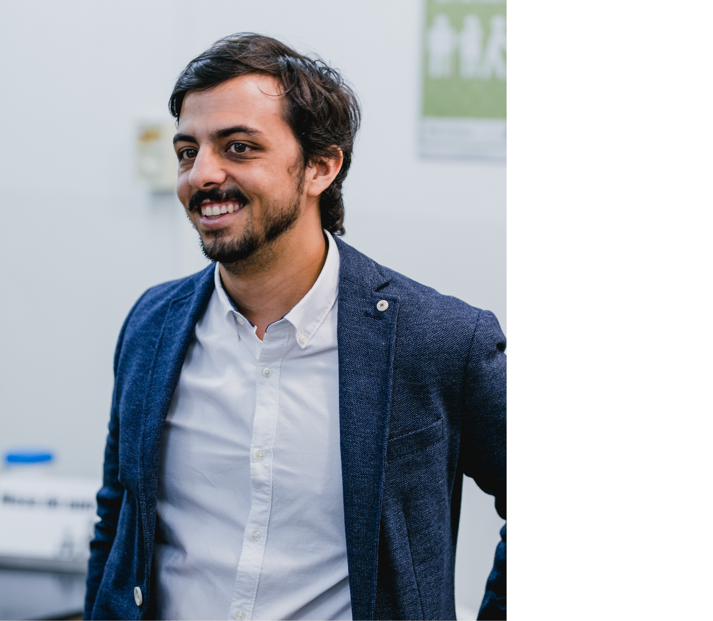

|  | Marcos LancellottiCustomer Success Manager at FlowicsBorn in Argentina on November 6th, 1991. From a very young age, I have been enthusiastic about sports, movies, television and technology. This is why I decided tostudy Multimedia Production, to be able to transform my passion into a Job. I am a proactive, determined person, who is eager to learn and enjoys teamwork. |
| 2005-2009 | Bachelor Degree | Colegio Los Robles Pilar | Bachelor Degree with orientation in Humanities and Social sciences |
| 2014-2016 | Multimedia production | TEA Imagen | I've learned how to use and operate a camera during a live tv show, also DSLR. Knowledge of how to make any kind of broadcast and streaming show. Experience in video editor and post-production. |
| 2017-2017 | Adobe Basic Package | Davinci | Course of Photoshop, Illustrator, InDesign, Premiere and AfterEffects |
| 2021-2022 | UX/UI Design | Coder House | Photoshop, Illustrator, Figma, Web Design, HTML, CSS |
| 2023-2024 | Full Stack | Udemy | Basic Course to learn Front and Back end developer |
| 2010-2016 | Business Manager | El Peregrino | Catholic Shop-Business Family: I was in charge ofthree stores with four employees each. My dutiesincluded stock control, dealing with suppliers,managing the accounts, setting the price of themerchandise and attending the customers |
| 2015-2016 | Media Manager (Intership) | ESPN | Reviewing and editing sports matches and shows, andclassifying them into a video store. |
| 2016-2020 | Multimedia Project Manager | ESPN | Clipping and editing videos for uploading to the ESPN website and TV Shows, mainly for SportsCenter. |
| 2020-Currently | Customer Success Manager | Flowics | My main task is to guarantee the building of strongrelationships with all of Flowics Clients in LatinAmerica and the USA, making sure they achieve theirgoals and assisting them in how they use our product.I also have the responsibility to be aware of any upselland lead the renewal of my clients. |
|
|